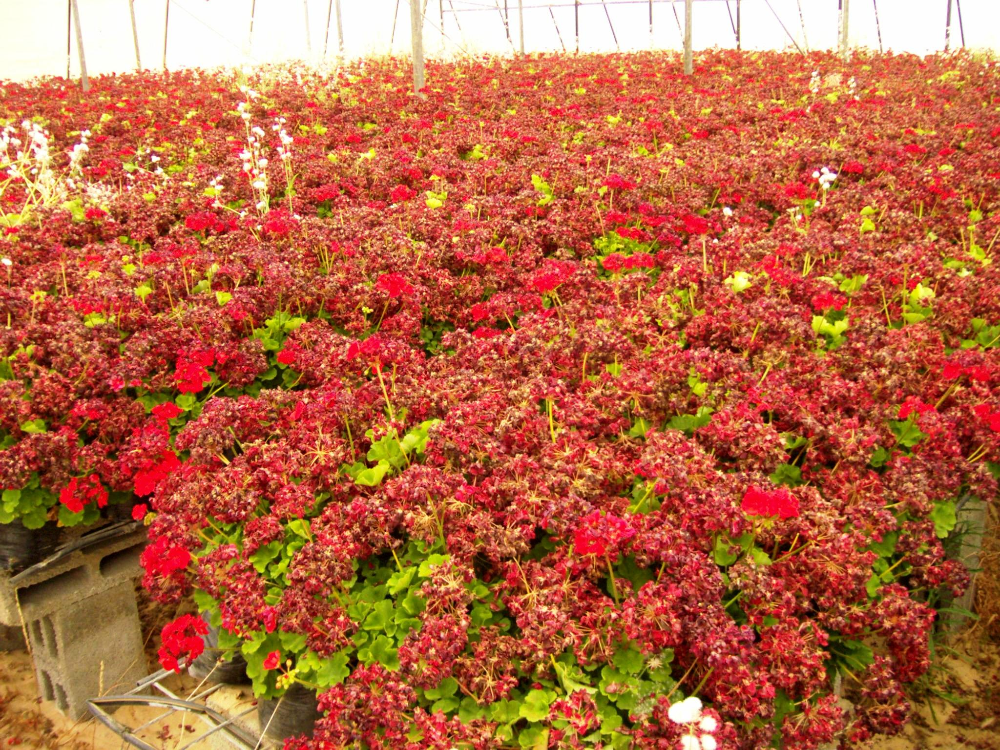
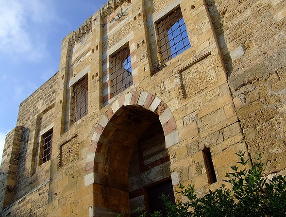
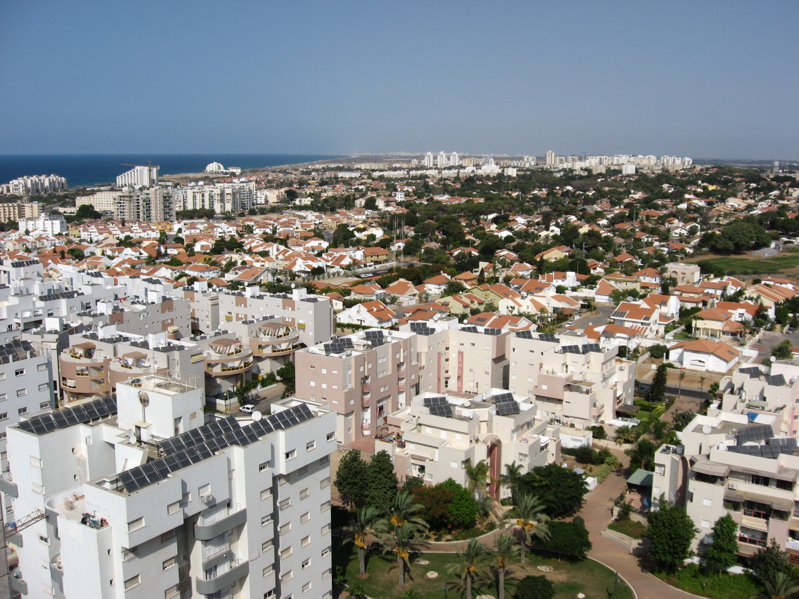

تعتبر مدينة غزة من أهم المدن الفلسطينية؛ لأهمية موقعها الإستراتيجي والأهمية الاقتصادية والعمرانية للمدينة، بالإضافة إلى كونها المقر المؤقت للسلطة الوطنية الفلسطينية، ووجود الكثير من مقراتها ووزارتها فيها.
تُعتبر غزة أحد أقدم المدن التي عرفها التاريخ،إنها مشتقة من المَنَعَة والقوة،
ارتبط العرب بغزة ارتباطاً وثيقاً فقد كان تجارهم يَفِدون إليها في تجارتهم وأسفارهم باعتبارها مركزاً مهماً لعدد من الطرق التجارية، وكانت تمثل الهدف لإحدى الرحلتين الشهيرتين اللتين وردتا في القرآن الكريم في «سورة قريش»: «رحلتا الشتاء والصيف»
أصبحت مركزا إسلاميا مهما وخاصة أنها مشهورة بوجود قبر الجد الثاني للنبي
محمد، هاشم بن عبد مناف
وتعتبر المدينة مسقط رأس الشافعي (767) الذي هو أحد الأئمة الأربعة عند
المسلمين السنة. والذي عاش طفولته المبكرة هناك
كانت غزة مدينة مزدهرة وتلقى المنح واهتمام عدة أباطرة. كان 500 عضو في مجلس الشيوخ يحكم غزة، وكان سكان المدينة مجموعة متنوعة من مختلف الأعراق، منهم الفلستينيين والإغريق والرومان والكنعانيين والفينيقيين واليهود والفراعنة والفرس، بالإضافة إلى البدو. وكانت تصدر في غزة عملات معدنية تزين مع تماثيل الآلهة والأباطرة.
قد ساهم المماليك في الهندسة المعمارية في غزة عن طريق بناء المساجد والمدارس الإسلامية، والمستشفيات، والحمامات العامة. كما سمحوا لليهود بالعودة إلى المدينة، وقد شهد العصر المملوكي ازدهار المجتمع اليهودي في المدينة. في 1481 كتب الرحالة موشلام «إنها أرض جيدة، ذات أشجار فاكهة وثمار والتي هي من نوعية ممتازة وقد بنى المماليك واحدا من أهم المعالم في غزة، وهو قصر الباشا، الذي كان يُستخدم لحكم المدينة وإدارتها. ويقع القصر في البلدة القديمة وهو اليوم مدرسة للبنات
سقطت المدينة في يد إسرائيل بعد عام 1967، لتظل تحت الاحتلال لمدة 27 سنة وتعاني من الإهمال الإسرائيلي لها كباقي المدن العربية الفلسطينية المحتلة. وقد صادرت سلطات الاحتلال مساحات شائعة من أراضي غزة وأقامت عليها العديد من المستوطنات
في نهاية عام 2008 وبداية عام 2009 وتحديدا بدءا من 27 ديسمبر 2008، بدأت إسرائيل حرب عدوانية شرسة على قطاع غزة بدأت بالقصف الجوي العنيف لجميع مقرات الشرطة الفلسطينية ثم تتالى القصف لمدة أسبوع للمنازل والمساجد وحتى المستشفيات وبعد أسبوع بدأت بالزحف البري إلى الأماكن المفتوحة في حملة عسكرية عدوانية غاشمة كان هدفها حسب ما أعلن قادة الاحتلال الصهيوني هو إنهاء حكم حركة المقاومة الإسلامية حماس، والقضاء على المقاومة الفلسطينية لا سيما إطلاق الصواريخ محلية الصنع مثل صاروخ القسام أو صواريخ روسية أو صينية مثل صاروخ غراد التي وصل مداها خلال الحرب إلى 50 كم، واستُخدمت القوات الصهيونية الأسلحة والقذائف المحرمة دوليًا مثل القنابل الفسفورية المسرطنة والقنابل آجلة التفجير وغيرها.
يعتمد سكان غزة على المياه الجوفية كمصدر وحيد للشرب والاستخدام الزراعي والمنزلي. يعد وادي غزة أقرب جدول مائي جنوبا. والذي يحتوي على كمية قليلة من الماء في الشتاء أما صيفا فيكاد لا يحتوي على ماء. يتم تحويل معظم إمدادات المياه فيها إلى إسرائيل
يوجد في غزة نقص خطير في مجال الإسكان والمرافق التعليمية والمرافق الصحية والبنية التحتية وعدم كفاية نظام الصرف الصحي، وقد ساهمت كل منها بتهديد النظافة وإنشاء مشاكل في الصحة العامة
اشتهرت غزة قديماً بزراعة محاصيل القمح والشعير والقطن والزيتون. وتصديرها إلى العالم العربي والخارجي، وفي غزة الآن العديد من المزروعات وهي: البطاطا، والطماطم، والخيار، والعنب، والفراولة، والتين، والبطيخ، والشمام. وانتشرت فيها البيارات التي تزرع فيها أجود أنواع الحمضيات كالليمون والبرتقال، والتي يعتمد البعض عليها في تغذية النحل.
تشتهر غزة بصناعة عصر الزيتون والصابون الذي يعتمد على الزيت كمادة أولية كما تعتبر صناعة الفخار من أقدم الصناعات الفلسطينية التي اشتهرت بها المدينة والتي تُباع في شوارع أسواق غزة، وكذلك صناعة الغزل والتطريز والبسط التراثية من صوف الماشية والنسيج والملابس القطنية والأثاث المصنوع من الخيزران وصناعة الزجاج الملون كذلك. فقد تم إنشاء قرية الفنون والحرف التي بُنِيَت من الطين على الطراز المعماري القديم، ويمارس عد من الحرفيين الصناعة التقليدية في تلك القرية
تعتمد السياحة في غزة بشكل رئيسي على البحر الذي تشتهر شواطئه برمالها الذهبية البراقة. كما وتعتمد السياحة كذلك على المواقع الأثرية التاريخية المنتشرة في غزة. وتشتهر غزة كذلك بجوها المعتدل صيفاً وشتاءً والذي يشجع الناس بدوره، على ارتياد الشواطئ والحدائق والمنتزهات وعلى قضاء أوقاتهم في المزارع والبيارات وفي المرافق السياحية.
تضم غزة العديد من الآثار منها الرومانية والمسيحية، وتتنوع الآثار الإسلامية بين المساجد والمدارس والزوايا والأسواق والقيساريات والأسبلة والحمامات والقصور التي تجلت فيها روعة العمارة والفنون الإسلامية، علاوة على مكتبة مهمة احتوت على عديد من المخطوطات. إن أقدم المواقع الأثرية بغزة تل العجول بجنوب المدينة على الضفة الشمالية لوادى غزة، وكان على هذا الموقع مدينة بيت جلايم الكنعانية، ويعتقد أن موقع مدينة غزة القديمة كانت على هذا التل منذ 2000 ق.م. وتضم غزة آثاراً مسيحية مثل دير القديس هيلاريون الذي يعتبر مؤسس حياة الرهبنة في فلسطين وكنيسة الروم الأرثوذكس بحى الزيتون الذي يعود تاريخها إلى بداية القرن الخامس الميلادي وآثاراً إسلامية متنوعة منها المساجد الأثرية كمسجد السيد هاشم الذي يقع بحى الدرج بالمنطقة الشمالية الذي يعود للعصر المملوكي، وجدده السلطان عبد الحميد سنة 1850 م. وتحوى غزة زوايا كالزاوية الأحمدية بحي الدرج، علاوة على المنشآت الأثرية المدنية كالأسواق مثل سوق القيسارية بحى الدرج، وهو ملاصق للجدار الجنوبي للجامع العمرى الكبير، ويعود بناء السوق إلى العصر المملوكي، ويتكون من شارع مغطى بقبو مدبب، وعلى جانبي هذا الشارع حوانيت صغيرة مغطاة بأقبية متقاطعة يطلق عليه سوق القيسارية أو سوق الذهب نسبة إلى تجارة الذهب فيه، والقصور مثل قصر الباشا بحي الدرج المكون من طابقين، ويعود للعصر المملوكي وكان مقراً لنائب غزة في العصرين المملوكي والعثماني، والحمامات كحمام السمرة بحي الزيتون، وهو أحد النماذج الرائعة الباقية للحمامات العثمانية في فلسطين والحمام الوحيد الباقي لغاية الآن في مدينة غزة. وكذلك تل الرقيش الذي اكتُشف فيه مستعمرة تعود للعهد الفينيقي في هذا التل تحيطها أسوار دفاعية ضخمة ويبلغ طولها حوالي (1600م).
تعتبر غزة الموطن الأصلي الشاش، القماش من أجل «ثوب غزة» يتم نسجة بالقرب من المجدل (عسقلان). القطن الأسود أو الأزرق أو المقلمة باللونان الزهري والأخضر، والتي تم تصنيعها في المجدل استمرت بالانتشار في باقي مناطق قطاع غزة من قبل اللاجئين من قرى السهل الساحلي حتى التسعينيات. يتميز الثوب الغزاوي بأكمام ضيقة ومستقيمة. وكان التطريز أقل كثافة من تلك المطبقة في الخليل. ومن الزخرفيات تشمل: مقص، مشط وحجاب والتي رتبت في كثير من الأحيان في مجموعات ثلاثية أو خماسية أو سباعية. ويعتبر استخدام الأرقام الفردية في الفولكلور العربي أن يكون فعالا ضد العين الحسود.
